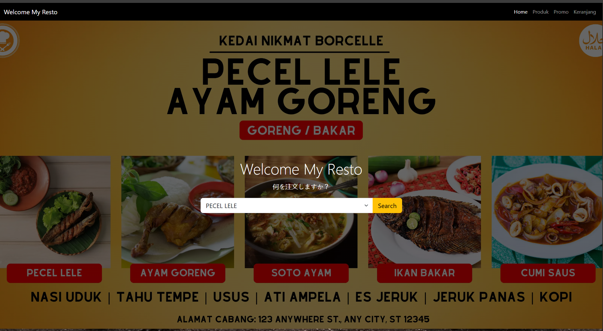

TOKO ONLINE MAS AMBA DAN AMBATRON
React
Tailwind
Node.js
MongoDB
Kami adalah TokoOnlineMu.com, destinasi belanja online No.1 di Indonesia yang menyediakan makanan adat, sneck viral, minuman segar, dan makanan khas lokal dan budaya. Dan tidak itu saja juga melayani pengantaran gratis dan mendapatkan voucer diskon, dan promo.semua ada di sini!
💡 Alasan Membuat
Harga Lebih Terjangkau & Transparan Tanpa biaya sewa toko fisik yang mahal, kami bisa tawarkan harga hingga 50% lebih murah. Plus, diskon harian dan promo eksklusif yang tidak ada di toko konvensional.